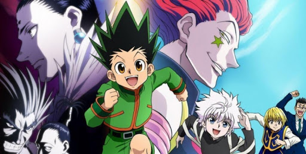

"Hunter × Hunter (ハンターハンター, Hantā Hantā?) est un shōnen manga écrit et dessiné par Yoshihiro Togashi. Il est pré-publié depuis mars 1998 dans l'hebdomadaire Weekly Shōnen Jump de l'éditeur Shūeisha, et a été compilé en trente-six tomes au 4 octobre 2018. En mai 2013, le manga s'est vendu à plus de 65 millions d'exemplaires au Japon. La version française est publiée aux éditions Kana, et trente-six tomes sont sortis au 3 mai 2019. Le manga est en pause depuis le 22 Novembre 2018.
La série a fait l'objet de deux adaptations en anime. La première a été réalisée entre 1999 et 2001, suivie de trois séries d'OAV en 2002, 2003 et 2004. Elle a été éditée en français par Dybex. La seconde, reprenant l'histoire depuis le début, a été diffusée entre octobre 2011 et septembre 2014."
Source"Gon Freecss a douze ans, et rêve de devenir hunter (chasseur en anglais). Les hunters sont des citoyens d'élite autorisés à faire quasiment tout ce qu'ils souhaitent sur simple présentation de leur carte de membre : ils peuvent ainsi acquérir gratuitement tout objet à la vente sur les fonds de l'association; réquisitionner tout véhicule, logement et outil pour leur travail; et sont de facto habilités à exercer tous les métiers du monde, pouvant tout aussi bien devenir chasseurs de prime, chefs-cuisinier, archéologues, zoologues, justiciers ou consultants dans divers domaines. Son père, Ging Freecss, qu'il ne connaît pas directement, est considéré comme un des plus grands hunters de son temps. C'est aussi pour le retrouver que Gon veut devenir hunter.
Cependant l'examen de hunter, qui a lieu chaque année, est extrêmement difficile et périlleux. On dit qu'un candidat sur 10 000 arrive sur le lieu des épreuves et qu'un seul candidat tous les trois ans devient hunter à sa première tentative. Durant les épreuves, il n'est pas rare d'être blessé, voire tué par des monstres, des pièges ou même d'autres concurrents…
Au cours de cet examen, Gon va rencontrer différents personnages, aussi bien amis qu'ennemis : Kurapika, Léolio, Kirua, qui a le même âge que Gon, fils d'une famille d'assassin d'élite, Hisoka, dont la grande passion est le combat contre des guerriers très puissants ; ainsi que beaucoup d'autres…
La force de Gon n'est pas que physique : son charisme, sa pureté, sa gentillesse, sa grande générosité et surtout soincroyable capacité à attirer la sympathie l'aident souvent à se sortir des situations les plus périlleuses."
Source 